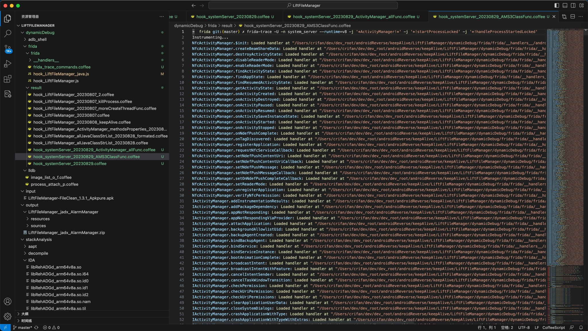
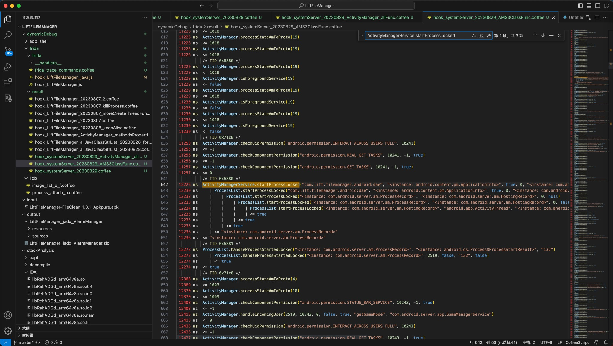
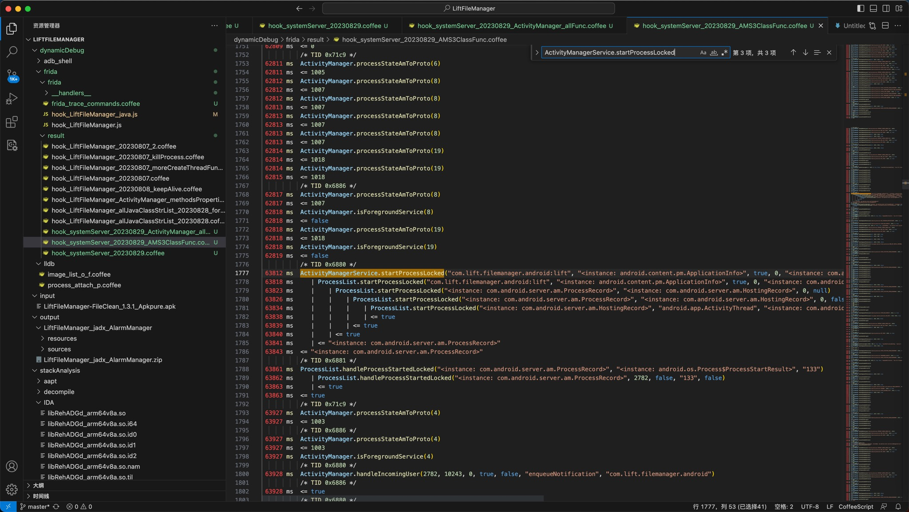

安卓系统进程system_server
此处列出frida-trace去hook安卓系统进程system_server的效果：
去hook：
- 类的全部函数
- ActivityManager
- 类的部分函数
- ProcessList
- ActivityManagerService
命令：
frida-trace -U -n system_server --runtime=v8 -j '*ActivityManager!*' -j '*!startProcessLocked' -j '*!handleProcessStartedLocked'
测试和触发：
测试了2次进程被杀和重启
redfin:/ # ps -A | grep lift
u0_a243 14053 12478 14853776 110652 do_epoll_wait 0 S com.lift.filemanager.android:sist
u0_a243 14380 12478 33445164 159208 do_epoll_wait 0 S com.lift.filemanager.android
u0_a243 16957 12478 14876024 110164 do_epoll_wait 0 S com.lift.filemanager.android:lift
u0_a243 20739 12478 14909548 110300 do_epoll_wait 0 S com.lift.filemanager.android:dae
redfin:/ # kill 16957
redfin:/ # ps -A | grep lift
u0_a243 28151 26549 14881452 110076 do_epoll_wait 0 S com.lift.filemanager.android:sist
u0_a243 28164 26549 14828204 109280 do_epoll_wait 0 S com.lift.filemanager.android:dae
u0_a243 28337 26549 33535192 167804 do_epoll_wait 0 S com.lift.filemanager.android
u0_a243 30398 26549 14895600 112296 do_epoll_wait 0 S com.lift.filemanager.android:lift
redfin:/ # kill 28164
redfin:/ # ps -A | grep lift
u0_a243 2519 26549 14968296 108068 do_epoll_wait 0 S com.lift.filemanager.android:dae
u0_a243 28151 26549 14881452 108304 do_epoll_wait 0 S com.lift.filemanager.android:sist
u0_a243 28337 26549 33482836 166176 do_epoll_wait 0 S com.lift.filemanager.android
u0_a243 30398 26549 14878116 110572 do_epoll_wait 0 S com.lift.filemanager.android:lift
redfin:/ # kill 30398
log：
➜ frida git:(master) ✗ frida-trace -U -n system_server --runtime=v8 -j '*ActivityManager!*' -j '*!startProcessLocked' -j '*!handleProcessStartedLocked'
Instrumenting...
NfcActivityManager.$init: Loaded handler at "/Users/crifan/dev/dev_root/androidReverse/keepAlive/LiftFileManager/dynamicDebug/frida/frida/__handlers__/android.nfc.NfcActivityManager/_init.js"
...
IActivityManager.addInstrumentationResults: Loaded handler at "/Users/crifan/dev/dev_root/androidReverse/keepAlive/LiftFileManager/dynamicDebug/frida/frida/__handlers__/android.app.IActivityManager/addInstrumentationResults.js"
...
ActivityManager.-$$Nest$smgetTaskService: Loaded handler at "/Users/crifan/dev/dev_root/androidReverse/keepAlive/LiftFileManager/dynamicDebug/frida/frida/__handlers__/android.app.ActivityManager/___Nest_smgetTaskService.js"
ActivityManager.$init: Loaded handler at "/Users/crifan/dev/dev_root/androidReverse/keepAlive/LiftFileManager/dynamicDebug/frida/frida/__handlers__/android.app.ActivityManager/_init.js"
ActivityManager.broadcastStickyIntent: Loaded handler at "/Users/crifan/dev/dev_root/androidReverse/keepAlive/LiftFileManager/dynamicDebug/frida/frida/__handlers__/android.app.ActivityManager/broadcastStickyIntent.js"
...
ActivityManagerService.startProcessLocked: Loaded handler at "/Users/crifan/dev/dev_root/androidReverse/keepAlive/LiftFileManager/dynamicDebug/frida/frida/__handlers__/com.android.server.am.ActivityManagerService/startProcessLocked.js"
Started tracing 375 functions. Press Ctrl+C to stop.
/* TID 0x71c9 */
1223 ms ActivityManager.checkUidPermission("android.permission.INTERACT_ACROSS_USERS_FULL", 10241)
1227 ms <= -1
...
11257 ms ActivityManager.checkComponentPermission("android.permission.GET_TASKS", 10241, -1, true)
11257 ms <= 0
/* TID 0x6880 */
12225 ms ActivityManagerService.startProcessLocked("com.lift.filemanager.android:dae", "<instance: android.content.pm.ApplicationInfo>", true, 0, "<instance: com.android.server.am.HostingRecord>", 0, false, false)
12230 ms | ProcessList.startProcessLocked("com.lift.filemanager.android:dae", "<instance: android.content.pm.ApplicationInfo>", true, 0, "<instance: com.android.server.am.HostingRecord>", 0, false, false, 0, false, 0, null, null, null, null, null)
12232 ms | | ProcessList.startProcessLocked("<instance: com.android.server.am.ProcessRecord>", "<instance: com.android.server.am.HostingRecord>", 0, null)
12233 ms | | | ProcessList.startProcessLocked("<instance: com.android.server.am.ProcessRecord>", "<instance: com.android.server.am.HostingRecord>", 0, false, false, null)
12234 ms | | | | ProcessList.startProcessLocked("<instance: com.android.server.am.HostingRecord>", "android.app.ActivityThread", "<instance: com.android.server.am.ProcessRecord>", 10243, [3002,3003,50243,20243,9997], 17377280, 0, 1, "default:targetSdkVersion=33:complete", "arm64-v8a", "arm64", null, "371714070", "371714070")
12235 ms | | | | <= true
12235 ms | | | <= true
12235 ms | | <= true
12236 ms | <= "<instance: com.android.server.am.ProcessRecord>"
12236 ms <= "<instance: com.android.server.am.ProcessRecord>"
/* TID 0x6881 */
12272 ms ProcessList.handleProcessStartedLocked("<instance: com.android.server.am.ProcessRecord>", "<instance: android.os.Process$ProcessStartResult>", "132")
12273 ms | ProcessList.handleProcessStartedLocked("<instance: com.android.server.am.ProcessRecord>", 2519, false, "132", false)
12274 ms | <= true
12274 ms <= true
/* TID 0x71c8 */
12368 ms ActivityManager.processStateAmToProto(4)
...
62818 ms ActivityManager.isForegroundService(8)
62818 ms <= false
62818 ms ActivityManager.processStateAmToProto(19)
62818 ms <= 1018
62818 ms ActivityManager.isForegroundService(19)
62819 ms <= false
/* TID 0x6880 */
63812 ms ActivityManagerService.startProcessLocked("com.lift.filemanager.android:lift", "<instance: android.content.pm.ApplicationInfo>", true, 0, "<instance: com.android.server.am.HostingRecord>", 0, false, false)
63818 ms | ProcessList.startProcessLocked("com.lift.filemanager.android:lift", "<instance: android.content.pm.ApplicationInfo>", true, 0, "<instance: com.android.server.am.HostingRecord>", 0, false, false, 0, false, 0, null, null, null, null, null)
63823 ms | | ProcessList.startProcessLocked("<instance: com.android.server.am.ProcessRecord>", "<instance: com.android.server.am.HostingRecord>", 0, null)
63826 ms | | | ProcessList.startProcessLocked("<instance: com.android.server.am.ProcessRecord>", "<instance: com.android.server.am.HostingRecord>", 0, false, false, null)
63834 ms | | | | ProcessList.startProcessLocked("<instance: com.android.server.am.HostingRecord>", "android.app.ActivityThread", "<instance: com.android.server.am.ProcessRecord>", 10243, [3002,3003,50243,20243,9997], 17377280, 0, 1, "default:targetSdkVersion=33:complete", "arm64-v8a", "arm64", null, "371765665", "371765665")
63838 ms | | | | <= true
63839 ms | | | <= true
63840 ms | | <= true
63841 ms | <= "<instance: com.android.server.am.ProcessRecord>"
63843 ms <= "<instance: com.android.server.am.ProcessRecord>"
/* TID 0x6881 */
63861 ms ProcessList.handleProcessStartedLocked("<instance: com.android.server.am.ProcessRecord>", "<instance: android.os.Process$ProcessStartResult>", "133")
63862 ms | ProcessList.handleProcessStartedLocked("<instance: com.android.server.am.ProcessRecord>", 2782, false, "133", false)
63863 ms | <= true
63863 ms <= true
/* TID 0x71c9 */
63927 ms ActivityManager.processStateAmToProto(4)
...
截图：


